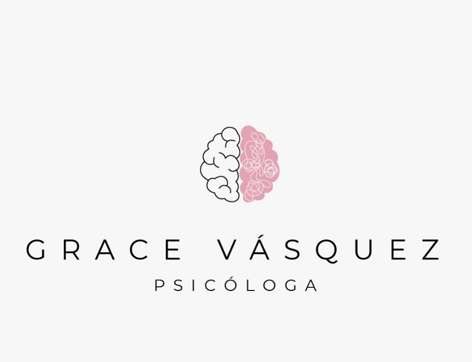

Atención psicológica virtual y presencial para adultos, adolescentes y parejas. Talleres, capacitaciones y certificaciones de salud mental.
Sesiones de psicología tanto online como en consultorio.
Terapia adaptada a las necesidades de cada persona.
Evaluaciones profesionales para fines laborales o académicos.
Programas de bienestar emocional para grupos y empresas.
📍 Centro Médico Chitré, al lado de Econotules
☎️ 996-2340 | 6215-5196
Instagram Enviar correo